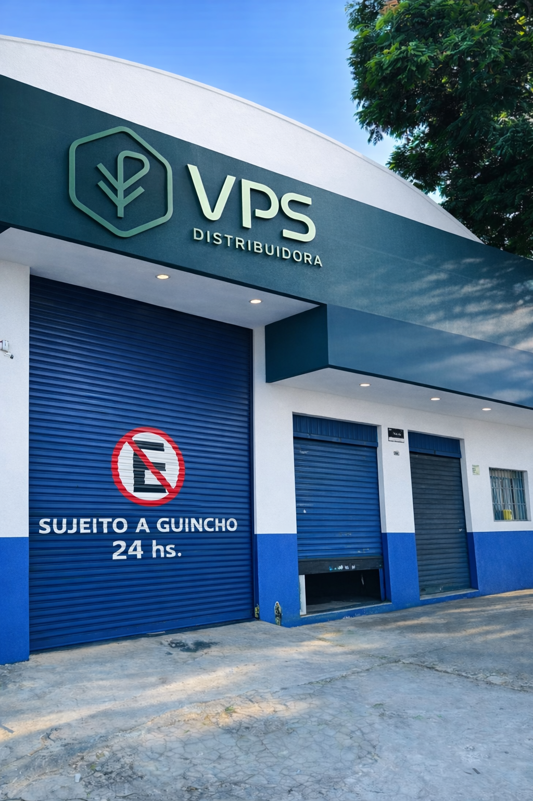
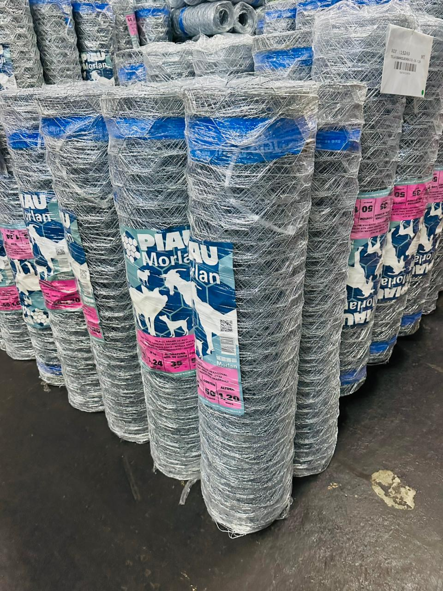
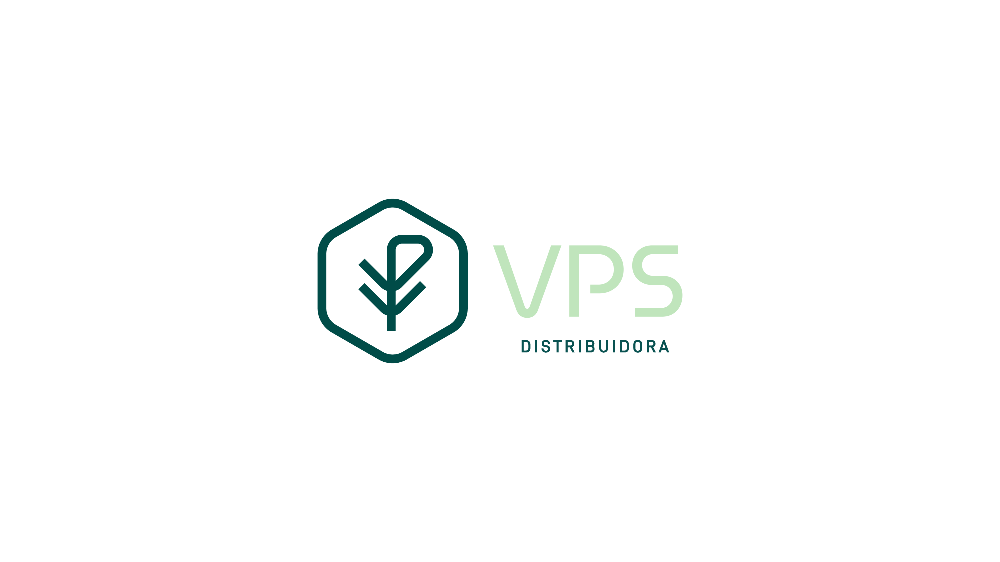
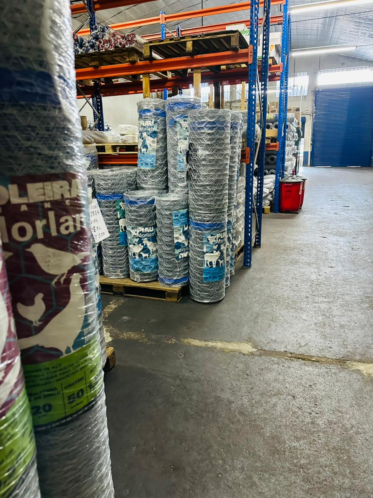
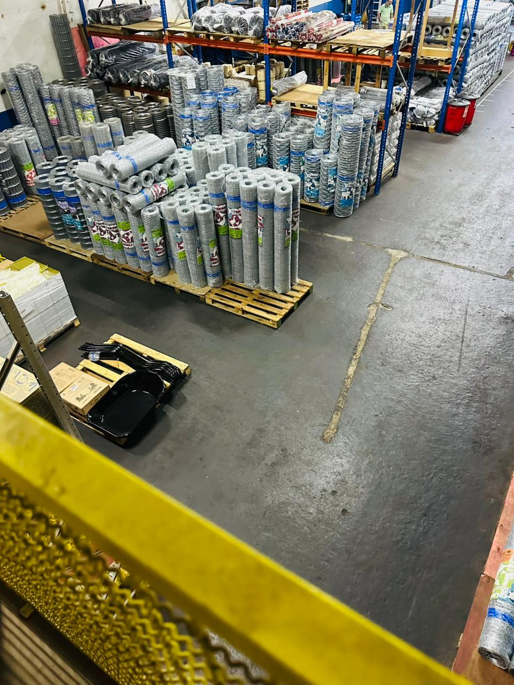
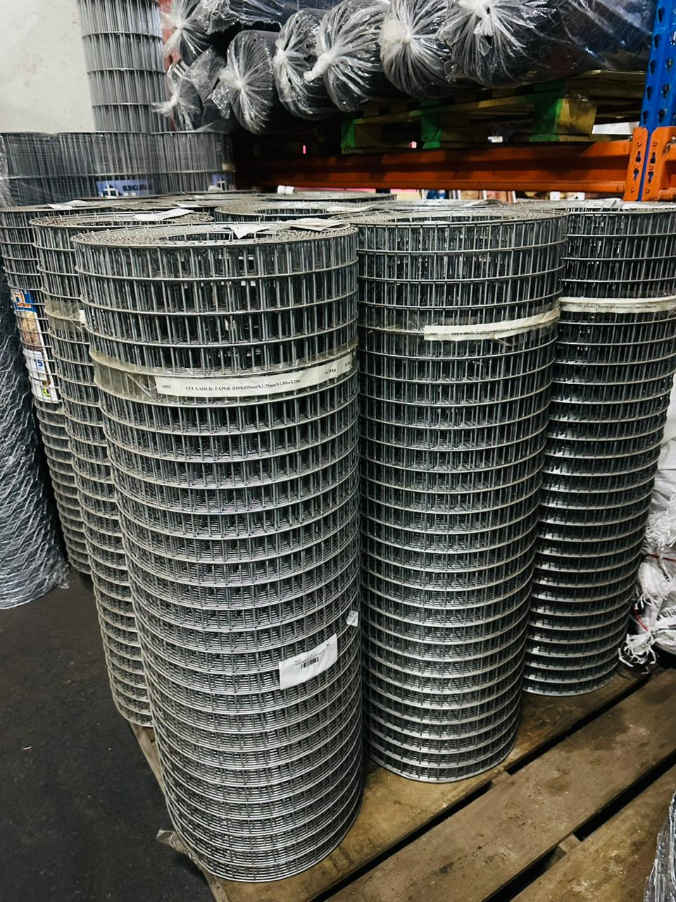
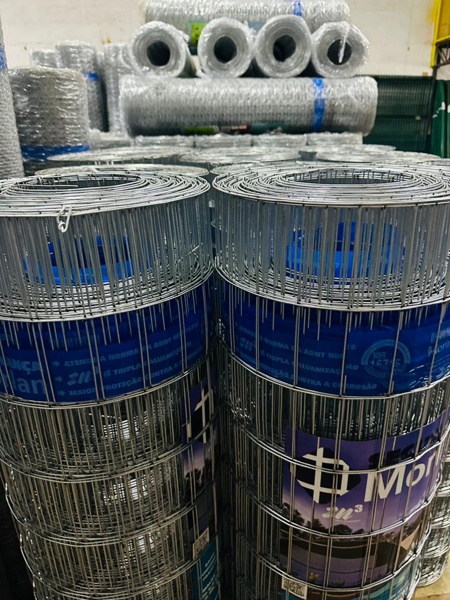
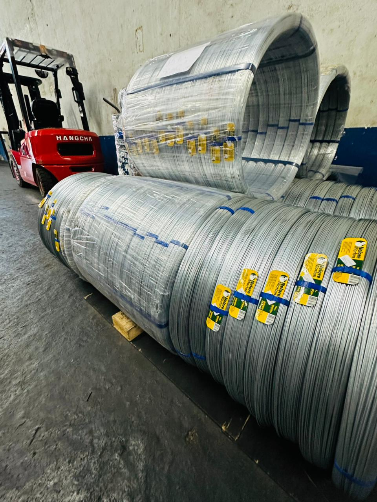
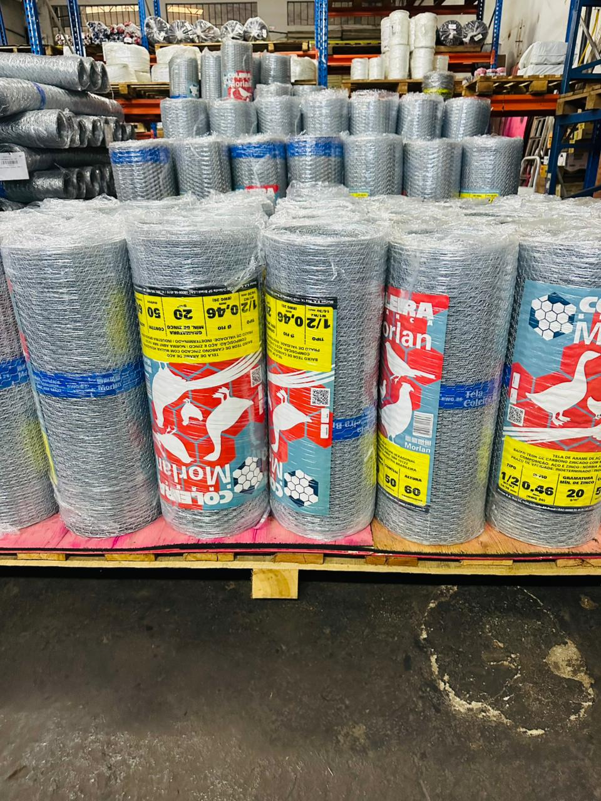
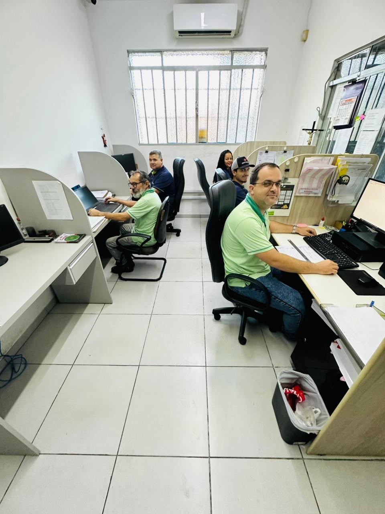

Atacado B2B para revenda em todo o Paraná
Telas, arames e ferragens com giro forte para lojas agro e construção.
A VPS Machado atende exclusivamente empresas, com distribuição de linhas metálicas e plásticas, entrega própria, representantes comerciais e uma operação de televendas preparada para manter a revenda abastecida com agilidade.



Mix que gira
Linhas fortes para revenda
Telas
Hexagonal, soldada, alambrado, estuque e mosquiteiroArames
Cerca, farpado, industrial, ovalado e por kgApoio à loja
Pregos, peneiras, cordas, balancim e ferragensOperação
Representantes presenciais + equipe de televendas
Distribuidor de telas para revenda
Linhas Morlan em destaque
Entrega própria no Paraná
Atendimento para agropecuárias
Atendimento para material de construção
Representantes comerciais
Televendas especializada
Mix completo para aumentar o giro da loja
Distribuidor de telas para revenda
Linhas Morlan em destaque
Entrega própria no Paraná
Atendimento para agropecuárias
Atendimento para material de construção
Representantes comerciais
Televendas especializada
Mix completo para aumentar o giro da loja
Linhas principais
Um mix pensado para abastecer o agro, a construção e a revenda com variedade real.
A VPS Machado distribui produtos com demanda recorrente, amplitude de medidas e opções para diferentes perfis de cliente, ajudando a sua loja a vender mais com uma base de itens forte.

Linha com forte giro em agro e varejo técnico
Telas hexagonais, soldadas, alambrado, estuque, plásticas e mosquiteiro.
A VPS Machado abastece revendas com variedade de telas para viveiro, pinteiro, galinheiro, mangueirão, cercamento, obra e aplicações do dia a dia, com foco em amplitude de mix e reposição segura.
Distribuição de linhas Morlan
Itens para revenda agro e construção
Mix com opções metálicas e plásticas

Base essencial para cerca, indústria e reposição constante
Arames para cerca, farpado, industrial, ovalado e linhas por quilo.
Para lojistas que precisam manter a prateleira competitiva, a VPS Machado entrega linhas de arame com saída recorrente, aplicações rurais e industriais e foco em preço com qualidade.
Arames para demanda rural e urbana
Reposição para lojas com alto giro
Atendimento atacadista para revenda

Complemento que amplia o ticket e fortalece a revenda
Balancim para cerca, pregos, peneiras, cordas, ferragens e chapas de fogão.
Além das telas e arames, a VPS Machado ajuda a compor um mix mais completo para revendas que querem concentrar compras, ganhar eficiência e aumentar oportunidade de venda no balcão.
Itens complementares para giro comercial
Compra concentrada em um só parceiro
Mais conveniência para a rotina da loja
Estrutura de distribuição
Estoque organizado, entrega própria e operação comercial alinhada ao ritmo da revenda.
Quem compra com a VPS Machado encontra uma distribuidora preparada para atender com agilidade, variedade e acompanhamento próximo em cada etapa do pedido.
Mais controle sobre prazo, roteirização e reposição para os parceiros atendidos.
Atendimento presencial para fortalecer relação comercial e identificar oportunidade de mix.
Equipe preparada para agilizar pedido, reposição e orientação de compra.
Qualidade, confiança e resposta rápida como base do atendimento comercial.



Cobertura comercial
A VPS Machado já atende grande parte do Paraná e segue expandindo a malha de distribuição.
Hoje a operação alcança 60% do estado, com meta de chegar a 100% da cobertura paranaense, mantendo o foco em agropecuárias e lojas de material de construção.
Atendimento atacadista
Parcerias comerciais em dezenas de praças do Paraná
Entre as regiões atendidas estão polos como Maringá, Londrina, Paranavaí, Umuarama, Cianorte, Goioerê, Ponta Grossa, Castro, Apucarana, Arapongas, Foz do Iguaçu, Guarapuava e muitas outras cidades.

A relação comercial da VPS Machado combina atendimento próximo, leitura de giro e suporte para que a revenda compre com mais segurança.
Como a VPS fortalece a revenda
Mais que fornecimento: uma rotina comercial feita para ajudar a loja a vender melhor.
Mais variedade de telas, arames e complementos para gerar venda em diferentes frentes.
Uma combinação importante para lojistas que precisam manter competitividade no balcão.
Entrega própria e equipe comercial preparada para reduzir demora entre pedido e reposição.
Foco total nas necessidades de agropecuárias e materiais de construção.
Pronta entrega e variedade
Uma operação montada para ter profundidade de estoque e visual de distribuição real.
Perguntas frequentes
Informações objetivas para acelerar a conversa comercial.
Não. O atendimento é voltado para empresas, com foco em lojas agropecuárias e materiais de construção.
Telas e arames são as linhas de maior prioridade, sem abrir mão de ferragens e itens complementares para composição de mix.
A operação combina representantes presenciais, televendas especializada e entrega própria para acompanhar o parceiro com mais proximidade.
Não. A distribuição já alcança grande parte do Paraná e segue em expansão para ampliar ainda mais a cobertura comercial.
Contato comercial
Fale com a VPS Machado e monte um atendimento alinhado ao mix da sua loja.
Use o WhatsApp, telefone ou o formulário para solicitar contato da equipe comercial e entender quais linhas fazem mais sentido para a sua operação.
Telefone e WhatsApp
(44) 99175-5988
Endereço
Av Brasil n° 7376
Horários
Seg. a Sex. 08h-11h | 13h-18h
Sábado 08h-12h
Sábado 08h-12h